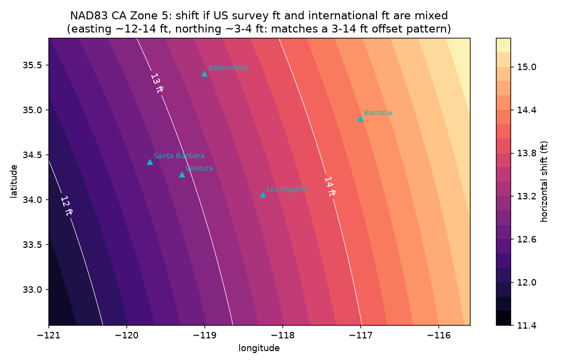

Diagnostic sample for a DJI Terra / Zenmuse L3 point cloud that sits a few feet to ~14 ft off surveyed ground control while RTK stayed FIXED. A systematic offset of that size usually comes from the coordinate pipeline, not GNSS quality. The first and cheapest test is the foot definition.
One US survey foot = 1200/3937 m; one international foot = 0.3048 m. The ratio differs by 2 ppm, so a coordinate read in the wrong foot moves by 2 ppm of its own grid value. In Zone 5 eastings are ~6.0–6.9 million ft and northings ~1.8–2.4 million ft, which gives:
| Place | Easting (ftUS) | Northing (ftUS) | ΔE (ft) | ΔN (ft) | Total (ft) |
|---|

Signature: easting moves ~12–14 ft and northing ~3–5 ft, almost a pure translation over a small site (scale error only 2 ppm). If the 10 GCP residuals fit a near-constant shift of that size and direction, the fix is a unit redefinition at the step where it was mixed (Terra output CRS, Emlid base entry, or the surveyor's CSV import), not a re-flight.
Fit a 2D similarity (Helmert) transform from LiDAR to survey coordinates on the 10 GCPs, read translation, scale (ppm) and rotation, and compare with the signatures above. Then validate the corrected LAS on independent checkpoints (RMSE, max residual). Code: offset_check.py (pyproj, EPSG:2229).